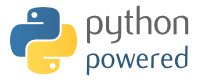

PyKDE4 Documentation
PyKDE4 is a set of Python bindings for the KDE4 kdelibs. It provides:
- The ability to write KDE4 applications using Python
- The ability to create graphical interfaces using KDE4 and Qt4 widgets
- The ability to create fully featured web browsers, text editors or other
document viewers completely from Python, or embed those features in your application
- The ability to code at a higher level of abstraction, since KDE4 and Python provide convenient
access to numerous features programs regularly require.
- Rapid development of applications, especially when combined with integrated development
environments like eric4 and tools like QtDesigner or QtLinguist
- PyKDE4 provides access to 11 modules, 36 namespaces, 692 classes, 10640 methods, 362 enums and 123 variables
(as of September 15, 2007)
The documentation set provides important information about using PyKDE4, tutorials on programming with Python
and PyKDE4, numerous example programs, and a documentation/example browser (pykdedocs) that integrates
all of this information into a easily used framework.
If your are using pykdedocs to read this documentation, please take the time to read the docs for pykdedocs
itself, including adding/editing bookmarks, and enabling/disabling samples.
PyKDE4 is built on software developed by
- Riverbank Computing (sip, PyQt4 and the original PyKDE version)
- KDE project programmers (the KDE Desktop Environment and kdelibs)
- Python programmers (the Python language and extensions)
pykdedocs and PyKDE4 are licensed under the GPL and LGPL respectively come with absolutely no warranty.
See this page for details.